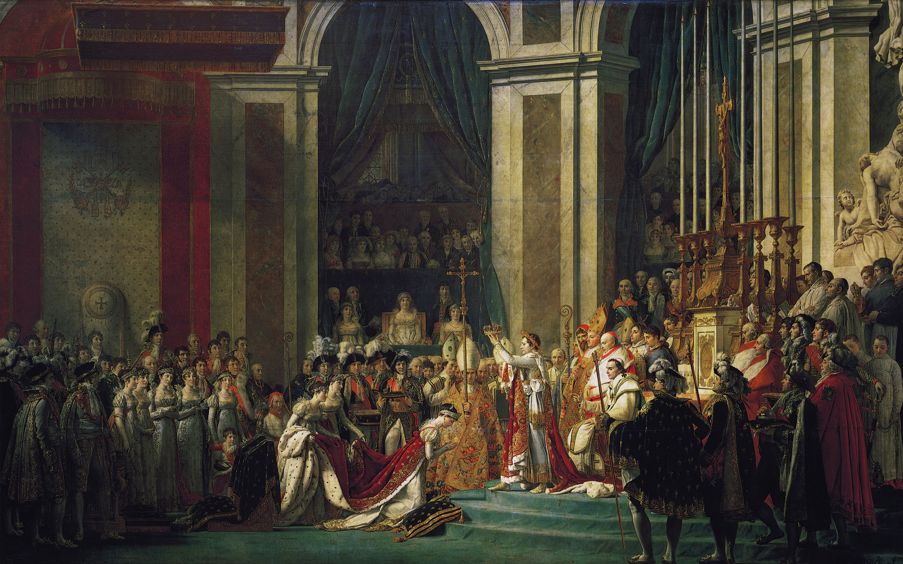
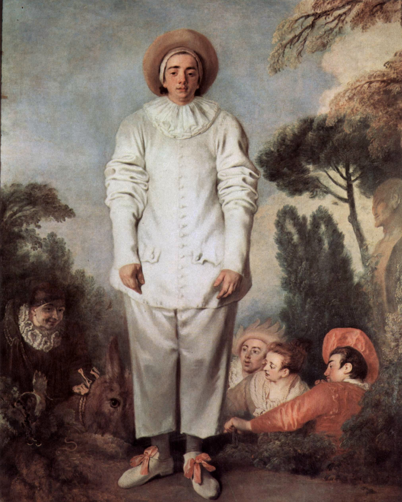
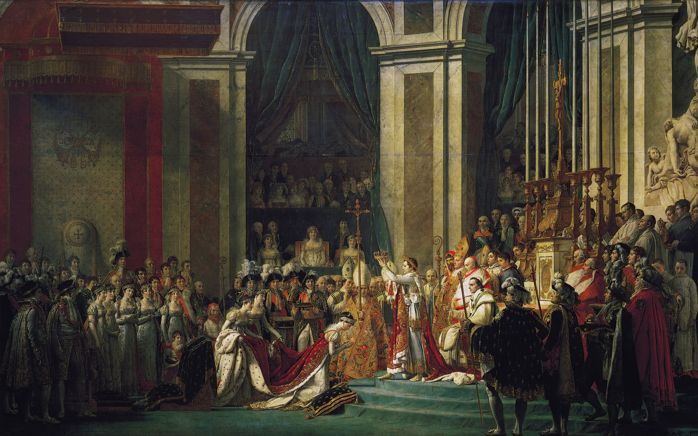
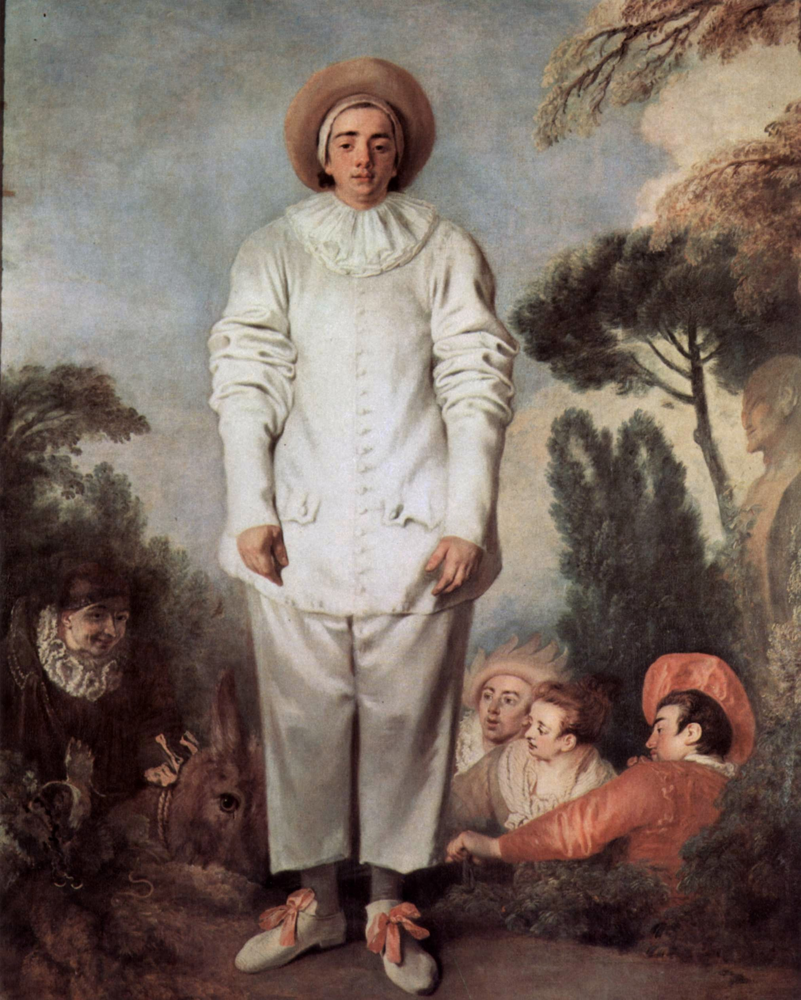
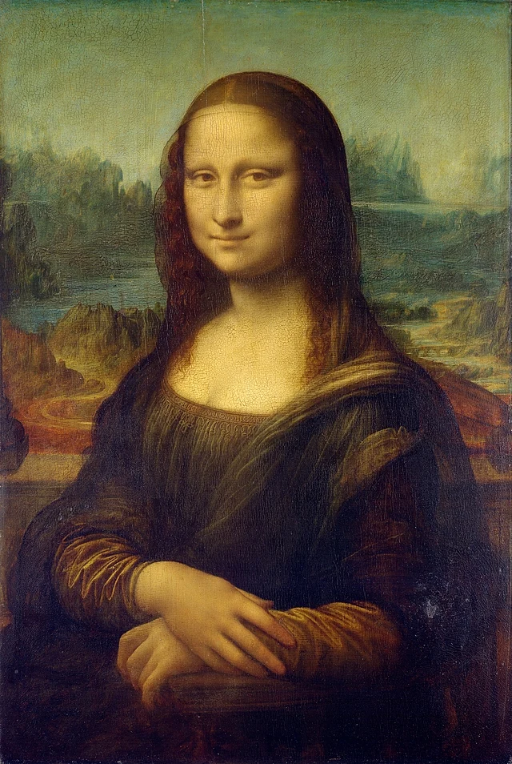
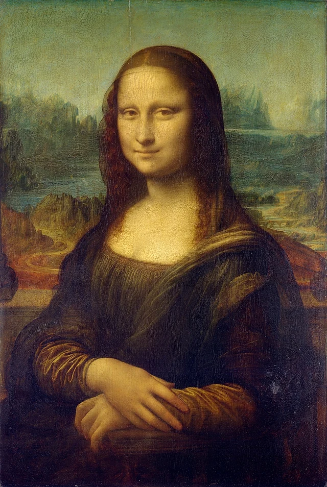
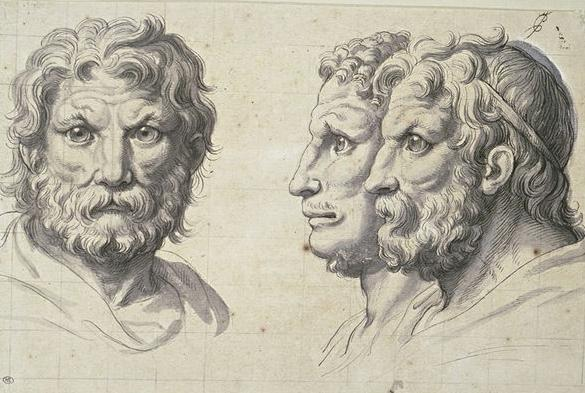
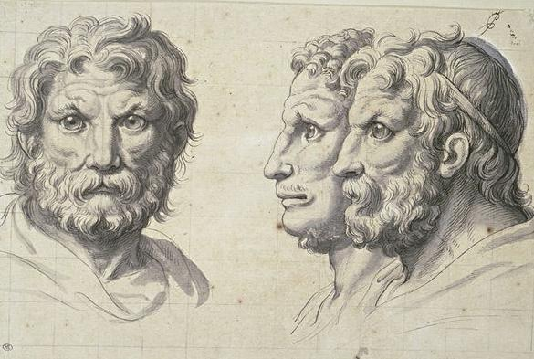

1802–1815
Dominique Vivant Denon (1747–1825)
 



 


 

Dominique Vivant Denon (1747–1825)
Auguste de Forbin (1777–1841)
Alphonse de Cailleux (1787–1876)
Philippe-Auguste Jeanron (1805–1877)
Émilien de Nieuwerkerke (1811–1891)
Frédéric Villot (1809–1875)
Frédéric Reiset (1815–1891)
Henry Barbet de Jouy (1812–1896)
Louis de Ronchaud (1816–1887)
Albert Kaempfen (1826–1907)
Théophile Homolle (1848–1925)
Eugène Pujalet (1868–1916)
Henry Marcel (1854–1926)
Jean Balluet d'Estournelles de Constant (1861–1949)
Henri Verne (1880–1949)
Jacques Jaujard (1895–1967)
Georges Salles (1889–1966)
Edmond Sidet
Henri Seyrig (1895–1973)
Jean Chatelain (1916–1994)
André Parrot (1901–1980)
Emmanuel Jacquin de Margerie (1924–1991)
Hubert Landais (1921–2006)
Michel Delignat-Lavaud (1948)
Michel Laclotte (1929)
Pierre Rosenberg (1936)
Henri Loyrette (1952)
Jean-Luc Martinez (1964)